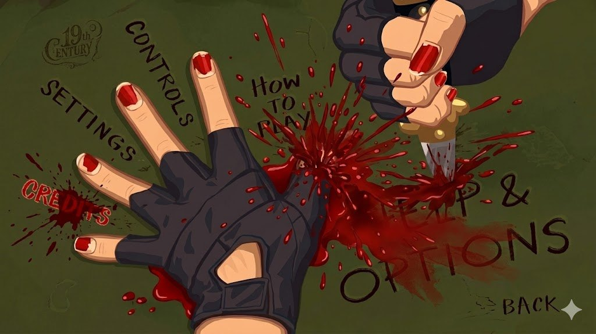
UI это та часть игры, которую игрок замечает только когда она сломана, а программистам она доставляет проблемы постоянно, потому что именно UI оказывается тем местом, где сходятся рендер, логика, ввод, локализация, аллокации и хотелки дизайнеров. В прошлой части я разобрал почему написать хороший UI сложно, долго и дорого.
Теперь попробую разложить архитектуру UI по нескольким осям, именно осям, потому что один и тот же UI может быть diegetic по расположению, immediate mode по хранению, reactive по потоку данных, flexbox по лейауту и векторным по рендеру одновременно, а проблемы начинается там, где люди пытаются совместить несовместимое.
Ось первая: где интерфейс живёт относительно мира
Самая известная классификация, которую любят на конференциях по игровому дизайну, делит UI по отношению к диегезису, то есть к вымышленному миру игры. Звучит как термин из киноведения, потому что это и есть термин из киноведения, который игровые дизайнеры притащили в проекты и теперь кидаются умными словами.
У «диеге[a\з\с\и]са» нет одного четкого определения в играх и термин тащит за собой два довольно разных значения, и у каждого свой набор названий.
Классическое значение изначально был διήγησις у Платона как повествование в собственном смысле, где поэт говорит от своего лица, «рассказывает», в противоположность мимесису (μίμησις), когда автор говорит голосами персонажей. Здесь диегезис можно назвать просто «повествованием» / «рассказыванием» (telling/showing). Диегезис с мимезисом бывает путают даже опытные дизайнеры игр.
Современное значение в кино и играх это уже то самое значение, из которого растут «диегетический звук» и «диегетический UI». Здесь диегезис = мир истории, вымышленная вселенная, внутри которой происходят события (нарративный мир в книгах, художественный сеттинг в сериалах, вымышленный мир (storyworld) в играх, диегетический мир / диегетическое пространство как отдельный вид в заданиях и отдельных миссиях игр или "вселенная фильма" в большом кино).
В кино собственно термин diégèse ввёл Этьен Сурьо в пятидесятых, а систематизировал и закрепил в литературе Жерар Женетт, когда он развёл diégèse (мир истории) и сам акт повествования, как дейстие расказчика. Отсюда и путаница, когда в русских текстах встречаются варианты диегезис / диегеза / диегесис, причём иногда «диегеза» специально используют для женеттовского «мира», а «диегезис» — для платоновского «повествования».
Для нашего UI-контекста важно именно второе значение, где диегетический интерфейс что существует внутри мира и внутри истории и который персонаж в принципе мог бы «увидеть». Поэтому я больше буду рассказывать про женеттовский диегезис (который внутри мира и внутри истории), а платоновский оставлю литературоведам, хотя и он в играх тоже представлен немало.
Diegetic UI живёт внутри мира и персонаж его буквально видит. Часы и полоска здоровья прямо на спине скафандра в Dead Space, наручный Pip-Boy в Fallout, приборная панель кабины в Elite Dangerous. Игрок и персонаж смотрят фактически на один и тот же объект, и это очень круто для погружения, но дорого для разработки, потому что теперь ваша полоска здоровья это не спрайт поверх экрана, а трёхмерный объект в сцене, который надо освещать, отражать, перекрывать геометрией и ещё сделать читаемым под любым углом камеры.

Самое забавное здесь, что первые игры были диегетическими от "своей природы", а интерфейса как отдельной сущности просто не существовало. В Pong нет «полоски здоровья», есть две палки и мячик, а счёт это две цифры наверху, которые к этому миру естественно относятся. Мир правда был очень небольшой, поэтому вопросов что это за цифры не было.
При этом был целый класс игр, которые получили диегетический интерфейс бесплатно и, что называется "в наследство", просто потому что их вымышленный мир уже содержал приборную панель. Любой авиасимулятор, гоночная аркада или кабина танка, тут разработчику даже стараться не надо, спидометр и тахометр это и есть UI, и он по построению живёт внутри мира, потому что машина без спидометра выглядела бы странно. Elite Dangerous прямой потомок именно этой линии, кабина как естественный носитель информации, и заслуга дизайнера тут скорее в том чтобы не испортить то, что сюжет и так преподнес на блюдечке.
Осознанно UI начали затаскивать в мир игры иммерсивные симуляторы девяностых, когда System Shock (1994) и его наследники попробовали сделать так, чтобы игрок и персонаж смотрели на одни и те же экраны, потому что вся философия жанра строилась на «ты и есть тот, кто там внутри». Получалось дорого, неуклюже и местами нечитаемо, но направление было нащупано.
Metroid Prime (2002) часто называют «учебником» Diegetic UI, и одной из лучших и самых цельных реализаций такого вида интерфейсов.
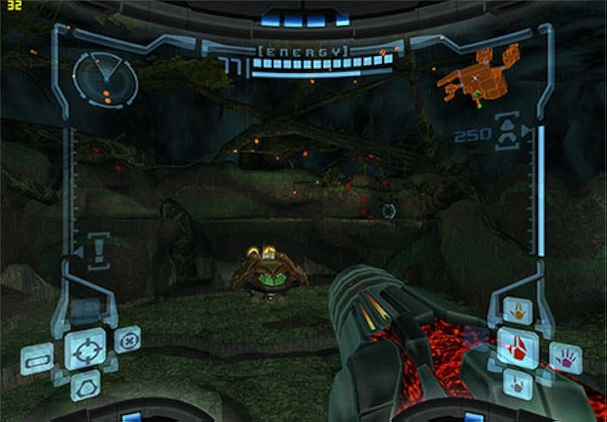
Весь интерфейс это визор шлема, через который игрок смотрит на мир, по краям обзора висят показатели, а если рядом взрывается что-то яркое, на внутренней стороне визора на отражается лицо ГГ. Если заходить в пар или под воду, стекло запотевает и покрывается каплями, здесь диегетический UI сделали фишкой игры.
Дальше идея вызревала по разным студиям независимо и в один год сразу несколько крупных проектов выкатили диегетический подход.
Dead Space (2008) вынес health прямо на хребет скафандра Айзека, патроны и заряд стазиса на сами стволы, а инвентарь и карту сделал голограммой, которую персонаж проецирует перед собой прямо в реальном времени. Игра при открытии меню не ставится на паузу, и пока ты копаешься в инвентаре, монстр может подойти сзади.
Far Cry 2 (2008) пошёл ещё радикальнее и выкинул миникарту вообще. Хочешь сориентироваться, доставай физическую бумажную карту и GPS-приборчик, и персонаж их буквально держит в руке посреди боя. Лечение там тоже диегетическое, с анимацией, как Джек выковыривает пулю или вправляет палец, и таблетки от малярии, которые надо реально доставать.
Fallout 3 (2008) дал наручный Pip-Boy, когда весь инвентарь, карта и характеристики это экран устройства на запястье, на который персонаж смотрит вместе с игроком.
Академическая теория приехала уже после того, как была практика использования и самая «известная классификация», про которую обычно на конференциях, оформилась в дипломной работе Fagerholt и Lorentzon «Beyond the HUD» в 2009 году, а в широкий оборот её утащила статья на Gamasutra в 2010-м. То есть сначала студии на ощупь, в 2008-м, выкатили готовые работающие примеры всех четырёх категорий, и только потом появились красивые слова diegetic / non-diegetic / spatial / meta, которыми всё это задним числом разложили по полочкам. Классика жанра, теория догоняет производство и присваивает себе терминологию.
Как только мир появился и подрос, появился и вопрос "куда девать всю служебную информацию", которую игроку надо показать, но которая в этот мир уже не влезает. Естественно первым ответ был HUD (heads-up display или Presentational UI ), спрайты поверх экрана, нарисованные последним проходом уже после всей сцены. Жизни, очки, патроны, таймер. И вот эта привычка рисовать UI «сверху и отдельно» оказалась настолько удобной, что стала индустриальным стандартом, от которого потом десятилетиями пытались избавиться.
(HUD) Presentational UI это классический интерфейс, который висит поверх картинки и никак миром не объяснён. Персонаж про него не знает, законы мира на него не действуют. В реализации дешёв, предсказуем и самый распространённый, что бы там ни говорили любители тотального погружения.
Само слово HUD геймдизайнеры, как водится, ниоткуда не придумали, а стащили у военных лётчиков, где heads-up display это прозрачное стекло перед глазами пилота, на которое проецируются высота, скорость и прицел, чтобы не опускать голову в приборы во время боя. Игры взяли термин и оставили только смысл «важные цифры висят перед глазами поверх всего остального».
Канон сложился в зале игровых автоматов, когда Space Invaders (1978) повесил наверх счёт и хайскор, а внизу оставшиеся жизни и кредиты. Эта раскладка «очки сверху, жизни снизу» оказалась настолько естественной, что её до сих пор копируют не задумываясь. HUD тут был не информационным, а монетизационным инструментом, потому что счёт на экране это не служебная цифра, а психологический крючок, заставляющий бросить ещё одну монетку чтобы побить свой же результат, а счётчик жизней это таймер до того момента, когда автомат снова попросит денег.
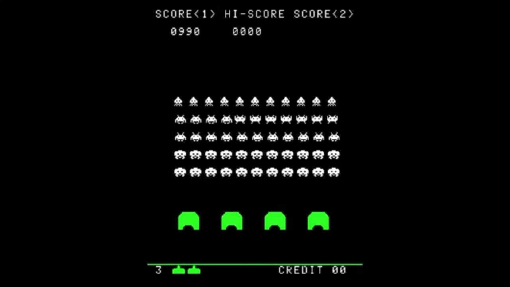
Pac-Man (1980) добавил важную мелочь - жизни показывал не числом, а маленькими иконками пакменов, а уровень фруктами в углу. Иконка вместо цифры читается быстрее, не отвлекая от геймплея, и это первый случай, когда HUD начали проектировать под скорость восприятия, а не просто «лишь бы влезло».
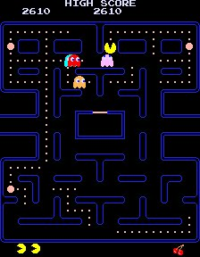
Defender (1981) подарил индустрии миникарту, как вынужденное решение, потому что игрок физически не видел врагов за краем экрана, а без этого знания игра превращалась в лотерею. Радар наверху показывал весь уровень в сжатом виде, и так появился элемент HUD, который существует исключительно потому что мир больше, чем окно, через которое ты на него смотришь. Через сорок лет миникарта обрастёт иконками квестов, точками интереса и маркерами до состояния новогодней ёлки, но родилась она именно здесь, из-за нехватки обзора.
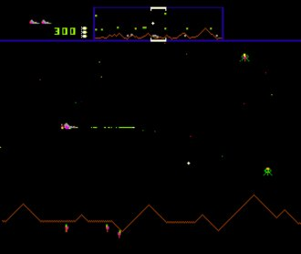
The Legend of Zelda (1986) собрал из всего этого хорошую комбинацию, которую потом будут использовать тысячи игр: сердца как здоровье, постоянная панель сверху со счётчиком рупий, ключей, бомб и активных предметох. Сердечки оказались гениальной находкой ровно по той же причине, что и иконки Pac-Man, количество и состояние здоровья можно просто видеть, без чтения числа, добавив такую новинку как "половинка сердца".
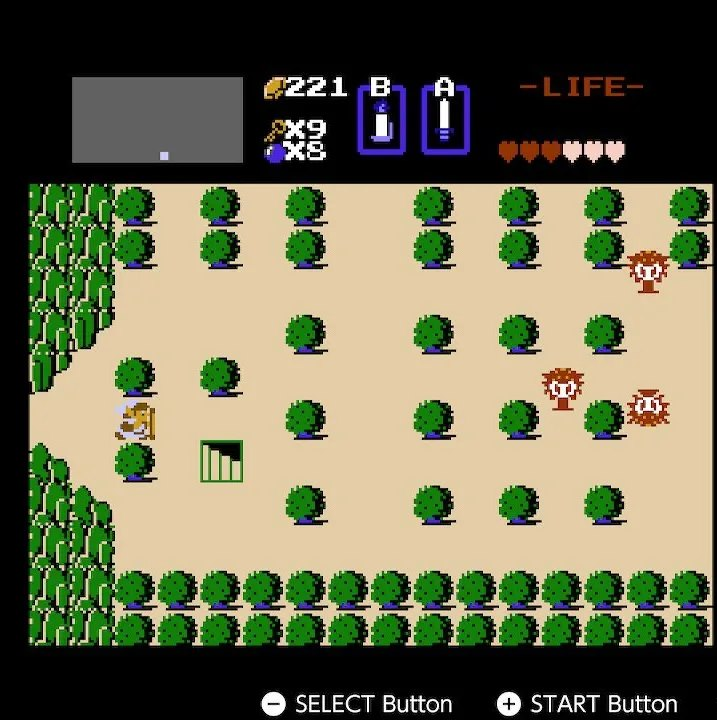
Doom (1993) показал, что HUD может нести не только информацию или иконки, но полноценные анимации. В нижней панели рядом с патронами и бронёй жило лицо Думгая, которое покрывалось кровью по мере потери здоровья, скалилось при подборе оружия и косилось в сторону, откуда прилетел урон. Технически это была служебная индикация, а воспринималось как игровой элемент, который добавлял погружения, а не отнимал.
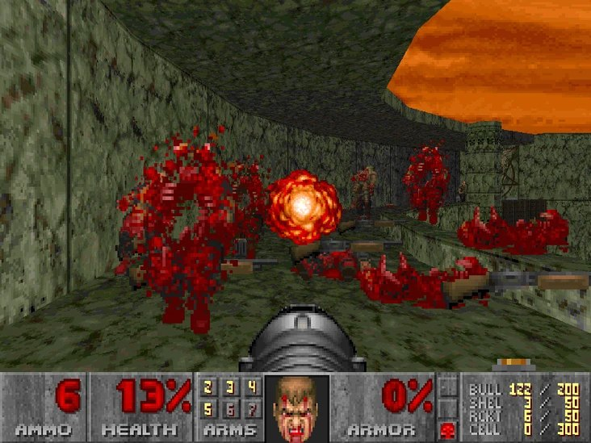
Потом Halo (2001) ввёл регенерирующие щиты с полоской, которая восстанавливается сама, а Call of Duty 2 (2005) пошёл до конца и выкинул полоску здоровья вообще, заменив её на покраснение краёв экрана и брызги крови, когда в тебя попадают, а в укрытии всё само заживает. Это всё ещё чистый presentational UI, никакого диегезиса, персонаж про красные края не знает, но при этом информация передаётся не цифрой, а ощущением, и экран остаётся пустым.
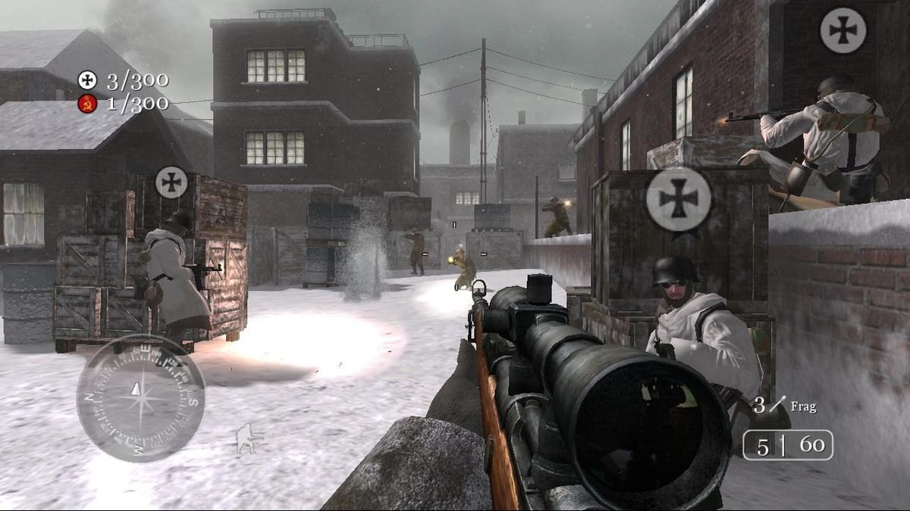
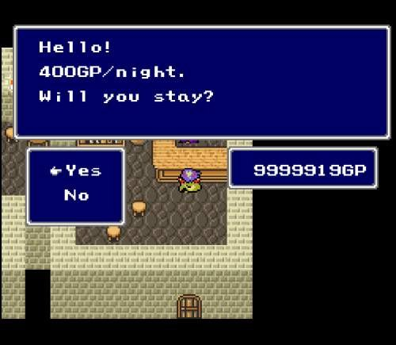
Meta UI работает как элемент технически вне мира, но намекает на состояние персонажа, например капли крови или краснота по краям экрана при низком здоровье, запотевание и тяжёлое дыхание при усталости. Мира на экране нет, но мозг игрока достраивает связь сам, и это, пожалуй, самый дешёвый по реализации способ создать ощущение состояния близкое к Diegetic поведению просто fullscreen-эффект с параметрами.
На границе между presentational и meta вся стройная классификация, которую придумали академики, начинает трещать по швам и те самые красные края экрана при низком здоровье, которые я только что записал в presentational как «контекстный HUD, который научился прятаться», в каноне Fagerholt и Lorentzon на самом деле числятся образцовым примером именно meta. Это серая зона самой классификации, потому разница между «служебной индикацией, которая просто притворяется ненавязчивой» и «эффектом, который намекает на состояние персонажа» зависит от трактовки и левой пятки вашего UI дизайнера. Под капотом и то и другое это будут fullscreen-проход с параметрами, так что держите в голове, что meta это не отдельная технология, а отдельное видение не «сколько осталось патронов», а «как сейчас чувствует себя герой».
Самая ранняя форма meta настолько старая, что и не считали даже интерфейсом. Когда аркадный автомат семидесятых-восьмидесятых на долю секунды заливал экран белым или красным в момент попадания, это и был прото-meta, потому что мира на экране это не касалось, персонаж про вспышку не знал, но мозг игрока мгновенно достраивал логику события до «мне сделали больно». Дёшево до неприличия, один кадр инвертированной палитры, а работало получше современных придумок.
Дальше идея спокойно дозревала в виде от «экран реагирует на состояние» до брызги крови на камере при ранении, размытие и двоение при контузии, болтанка и расплывающаяся картинка, когда персонаж пьян или отравлен. Серия GTA с её пьяной камерой это классика жанра, ты ничего не читаешь и ни на что не смотришь, а просто физически чувствуешь, что герой пьяный, потому что и управление поплыло вместе с картинкой. И всё это по реализации остаётся тем, не более чем парой полноэкранных-эффектов и самыйм дешёвый способ подделать ощущение состояния, не строя ни одного трёхмерного объекта.
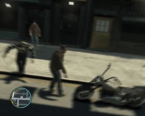
Настоящая веха, после которой к meta UI стали относиться всерьёз, это Eternal Darkness: Sanity's Requiem (2002). Там была шкала рассудка, и при её падении игра начинала меняться вокруг персонажа. Экран наклонялся, по стенам ползли насекомые, у героя без предупреждения отваливалась голова (а потом оказывалось, что это галлюцинация). Разработчики на это не остановились и игра приглушала звук, выкидывала фальшивый синий экран или показывала поддельное сообщение «ваше сохранение повреждено и сейчас будет удалено» и фейковое «To Be Continued» посреди катсцены.
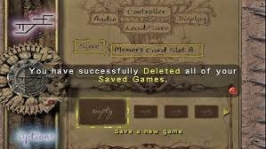
meta перестал намекать на состояние персонажа и начал лезть в голову игрока напрямую, ломая четвёртую стену тем же дешёвым инструментом, fullscreen-обманкой, только нацеленной не внутрь мира, а наружу, в гостиную перед экраном.
После этого жанр ужасов фактически взял meta ui на вооружение как основной язык и например Amnesia: The Dark Descent (2010) показывала помутнение рассудка через искажение картинки, дрожащее зрение и наступающую черноту, когда персонаж слишком долго сидел в темноте.
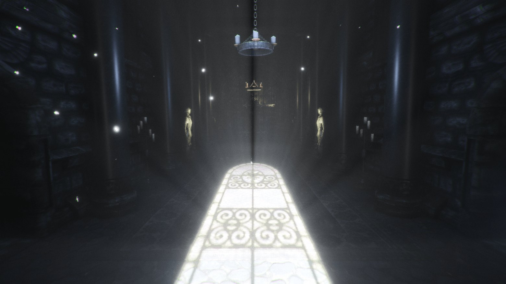
Spec Ops: The Line (2012) сделала вынесла meta UI в отдельный игровую механику и по мере того как у главного героя ехала крыша, экраны загрузки из нейтральных подсказок превращались в обвиняющие реплики, обращённые лично к игроку. Состояние персонажа протекало в служебные элементы, которые по идее вообще вне мира.
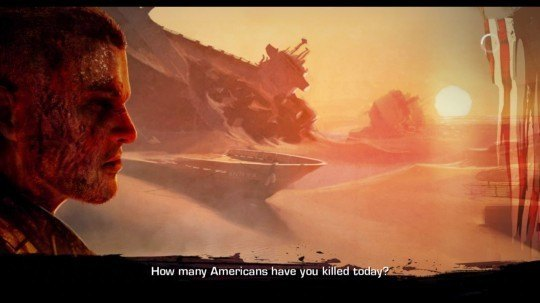
Дальше всех зашёл Hellblade: Senua's Sacrifice (2017), где психоз героини передан почти целиком через meta-средства, вроде звука с голосами, которые шепчут будто прямо у вас за спиной в наушниках, постоянное искажение и расфокус картинки, размывающаяся граница между реальным и привидевшимся. Никакой полоски «уровень безумия» там нет, потому что состояние персонажа и есть интерфейс, и игрок переживает его теми же средствами, что и героиня, при этом формально всё это остаётся screen-space эффектами поверх рендера.
В современных играх meta UI стал стандартным приемом в наборе пост-обработки и отдельной специализацией для дизайнеров игры. Десатурация и уход картинки в серость на грани смерти, виньетка и пульсация по краям при низком здоровье, хроматические аберрации при контузии, цветовой сдвиг и волны при отравлении - это всё meta, которую делает один или нескокько человек, и ни один большой проект без этого набора уже не выходит. Это по-прежнему самый выгодный по соотношению «эффект на вложенный труд» способ поговорить с игроком за пределами игры выдав очень небольшую порцию данных, а мозг игрока бесплатно дорисует всё остальное.
Spatial UI привязан к пространству мира, но не к конкретным внутримировым экранам. Это метки над головами NPC, маркеры квестов, контуры подсветки интерактивных предметов и хотя формально эти элементы существуют в трёхмерных координатах сцены, но персонаж их не видит, их видим только мы с вами, потому что обычно они все строятся поверх presentational слоя.
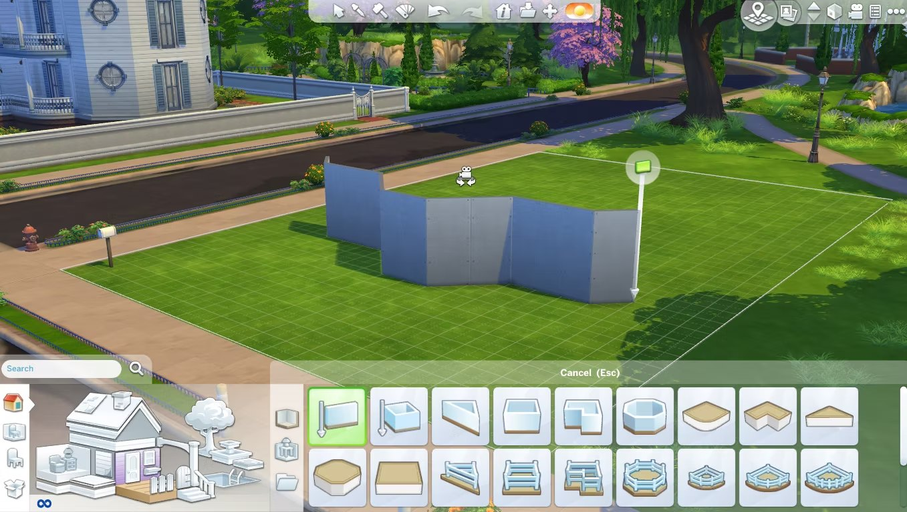
Ноги spatial UI растут из стратегий, как и зелёное кольцо под выделенным юнитом и полоска здоровья, висящая прямо над его головой. Собственно это и есть чистейший spatial UI элемент, который живёт в точке мира, движется вместе с объектом, но сам юнит про своё кольцо ничего не знает, видит его только игрок сверху.
Решение было утилитарным, надо же как-то показать, что именно ты выделил и сколько у него жизней. Когда жанр перешёл в 3D и открытые миры, spatial расцвёл, и его символом стал жёлтый восклицательный знак над головой квестодателя, который массово канонизировал World of Warcraft (2004), и с тех пор «!» над NPC и «?» над тем, кому надо сдать задание, читаются интуитивно в любой игре мира без единой строчки объяснений.
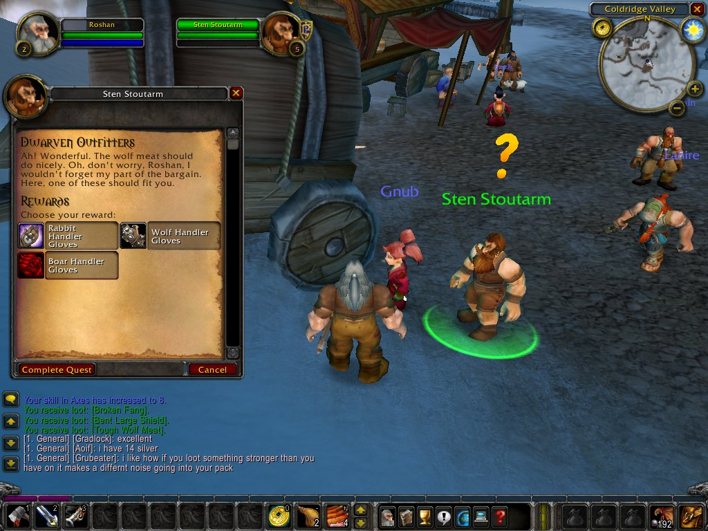
Это гениальный по своей простоте ход, когда не надо создавать диалогов, не надо подсказок, игрок издалека видит точку в пространстве и сразу понимает её функцию.
Параллельно решали более тонкую задачу, навигацию. Fable (2004) добавил светящуюся золотую дорожку прямо по земле, ведущую к следующей цели, буквально нарисовав в мире путь, а не стрелочкой в углу. Игрок шёл по тропинке, которой не существует, и при этом не отрывал взгляд от происходящего.
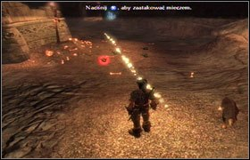
Отдельная большая ветка spatial механик - это выделение интересных объектов прямо в сцене. Контур на предмете, с которым можно взаимодействовать, всплывающее «нажмите, чтобы подобрать» у конкретной вещи, блик на лутбоксе. А когда подсветки стало нужно много, родились целые режимы зрения: Detective Vision в Batman: Arkham Asylum (2009), ведьмачье чутьё в The Witcher 3, Focus в Horizon, режим слуха в The Last of Us.
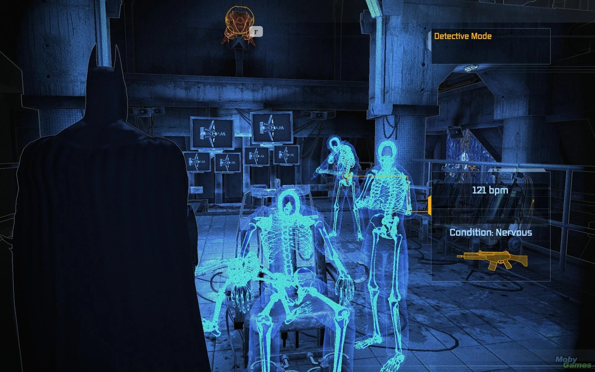
Технически это spatial-оверлей, который обводит врагов, следы и предметы сквозь геометрию, и формально персонаж в эти моменты «всматривается», но видим подсветку всё равно только мы, и работает она в координатах мира.
Mirror's Edge (2008) с её Runner Vision это тот же приём, повёрнутый в сторону навигации: нужные объекты на маршруте загораются красным, направляя взгляд по уровню, при этом Фейт никакого красного не видит.
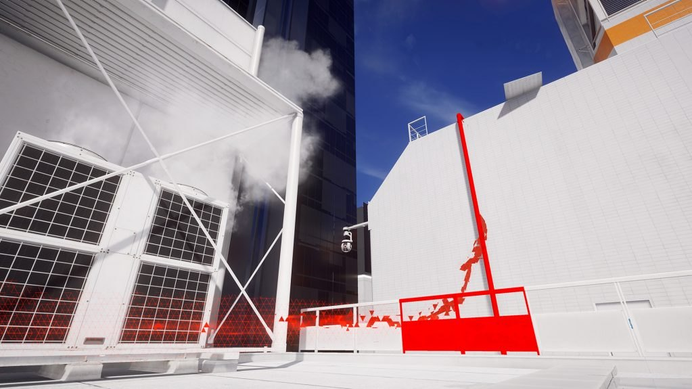
Дальше открытые миры, особенно убисофтовской школы, заклеили карту и сам мир облаком иконок, висящих в мировых точках, и игрок начал смотреть не на пейзаж, а на гирлянду маркеров поверх него.
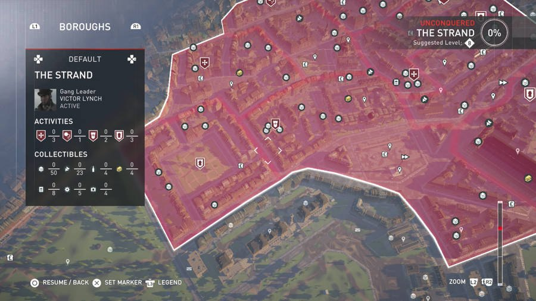
Сюда же примыкает свежий спор про жёлтую краску на карнизах, за которые можно зацепиться. Это пограничный случай, потому что краска впечена прямо в текстуру мира и формально почти диегетична, но по функции это чистый spatial-указатель «лезь сюда», и часть игроков считает его костылём, который студии заботливо примотали скотчем к руке.
Как обычно, маятник качнулся обратно и игры начали предлагать отключать маркеры и ходить по описаниям (режим исследования в Assassin's Creed Odyssey), а самое элегантное решение показал Ghost of Tsushima (2020), когда вместо стрелки-вейпоинта сделали направляющий ветер, который дует в сторону цели, гоняя листья и траву.
Функционально это всё тот же spatial-указатель направления, но визуально он вернулся обратно в диегезис, потому что ветер это часть мира, и герой его как бы чувствует. Круг замкнулся: spatial-навигацию переодели в diegetic-одежду, чтобы убрать с экрана ещё одну иконку.
Еще есть Narrative UI - это как игра разговаривает с игроком через субтитры, диалоговые деревья, журналы заданий, кодексы и записки. Формально он почти всегда Presentational UI, потому что субтитров внизу экрана персонаж не видит и закон мира на него не действует, но именно narrative UI чаще других нарушает чистоту классификации и норовит уехать внутрь мира. Диалоговое колесо в Mass Effect висит поверх картинки и миром не объяснено, а вот терминалы и аудиодневники в System Shock и BioShock это уже наполовину diegetic-экраны, которые персонаж реально держит в руках и слушает. Журнал заданий в The Witcher 3 написан от лица Лютика как внутримировой текст, хотя открывается обычным меню на паузе, и эта двойственность позволяет выделить этот тип в отдельный, а не растворять в HUD или меню. narrative UI это тот редкий случай, когда самый «текстовый» и вроде бы простой элемент интерфейса тянет за собой целую подсистему данных. Еще он немного заползает на вторую ось, поэтому часто его вообще ставят особняком.
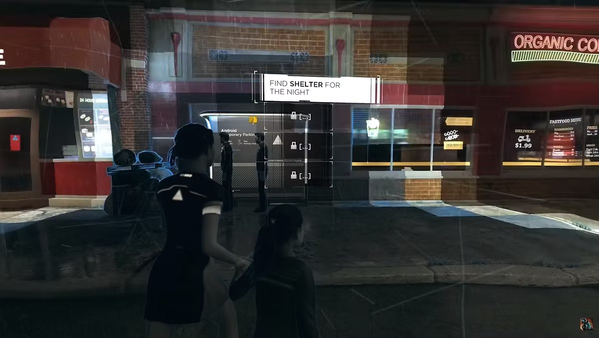
Narrative UI стоит особняком и классифицируется не по тому, где он нарисован, а по тому, что он несёт, а несёт он историю и данные. И в зависимости от реализации он спокойно заезжает в любой из четырёх предыдущих типов, например как аудиодневник в руках наполовину diegetic, а всплывающая над предметом записка ближе к spatial. Это, кстати, единственная категория, которую определяют через содержание, а не через способ отрисовки, и именно поэтому она вечно норовит уехать внутрь мира.
Narrative UI это дедушка всех интерфейсов и первые игры вообще целиком состояли только из него. Colossal Cave Adventure (1976) и Zork (1977) были чистым текстом и надо было читать описание комнаты и печатать команды словами, а весь интерфейс это просто текст туда и оттуда. Никакого HUD, никакого мира на экране, потому что и экрана-то толком нет, есть диалог между игрой и игроком на естественном языке. Так что «самый текстовый и вроде бы простой элемент», на самом деле предок всего остального UI, это потом вокруг него наросла графика.
Дальше narrative UI развивался в сторону усложнения того, что прячется за текстом. Сначала появилось диалоговое окно внизу экрана, канон JRPG и квестов, от Dragon Quest (1986) до поинт-клик-квестов.
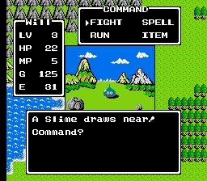
Потом текст стал ветвиться и классические CRPG вроде Fallout (1997) дали пронумерованный список реплик, часть которых открывалась только при нужном навыке, тут narrative UI впервые потянул за собой целую подсистему, когда за безобидным списком ответов стояли проверки характеристик, флаги состояния и развилки, которые надо где-то хранить и куда-то сохранять.
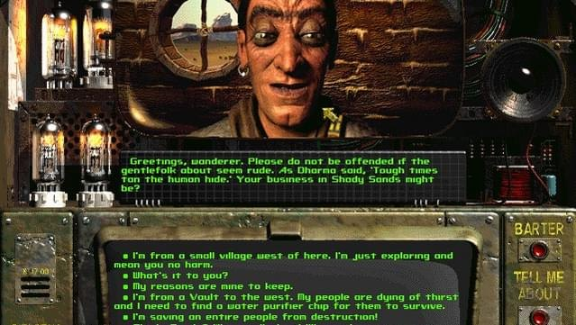
Mass Effect (2007) изобрел колесо, где варианты разложены по кругу по тону, сверху доброжелательные, снизу агрессивные, а игрок выбирает не точную фразу, а намерение, после чего полностью озвученный Шепард говорит развёрнутую реплику.
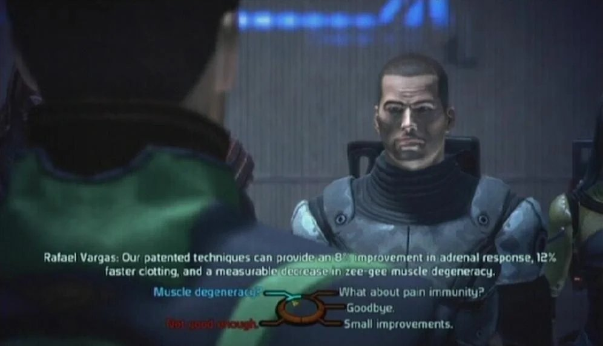
Это попытка вытащить narrative UI из «читалки» в сторону кино, и она же обнажила необходимость полной озвучка каждой ветки на нескольких языках. Параллельно шла линия, которая тащила narrative UI в diegetic, и System Shock (1994), а за ним BioShock (2007) сделали аудиодневники частью наративного UI, когда персонаж физически подбирает диктофон или лог, запись играет, пока ты продолжаешь идти, и история мира рассказывается не катсценами, а найденными объектами.
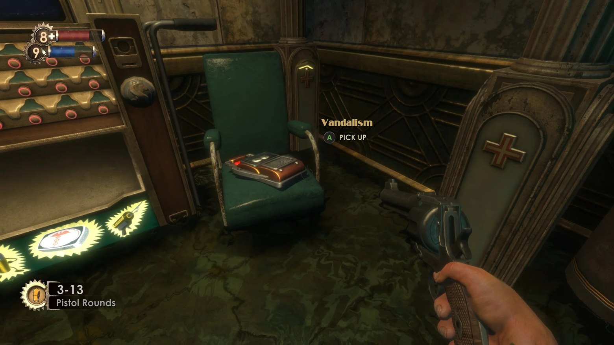
Это уже наполовину diegetic-интерфейс, тот самый случай, когда «как игра разговаривает с игроком» совпадает с «что персонаж держит в руках». Red Dead Redemption 2 (2018) дал индустрии журнал, который Артур рисует и подписывает от руки, хотя открывается он всё тем же меню на паузе, сделав паузу тоже игрой, когда описание квестов притворяется художественным произведением персонажа.
И вот за этой «простотой» прячется самая тяжёлая в инженерном смысле часть всего интерфейса. Субтитры внизу экрана это вершина айсберга, под которой локализация на пару десятков языков с разной длиной строк, синхронизация текста с озвучкой, система флагов и стейт-машина квестов, кодекс как полноценная база данных лора, сохранение и загрузка всего состояния диалогов. То есть самый «текстовый» элемент UI на деле тянет за собой подсистему данных, отдел нарративного дизайна, отдел локализации и кучу багов в духе «реплика ссылается на событие, которого в этом прохождении не было».
Поэтому narrative UI и ставят особняком заслуженно, он один определяется содержанием, один пронизывает все четыре вида сразу, и один уходит корнями в самые первые игры, оставась самой дорогой и хрупкой частью интерфейса за фасадом из невинных строчек текста.
Полезно держать в голове, что эта ось чисто про восприятие игрока и почти ничего не говорит программисту о том, как это реализовать. Diegetic-часы под капотом это такой же набор данных о здоровье, как и обычная полоска, просто отрендеренный в мировом пространстве вместо экранного. Дизайнерская классификация и инженерная архитектура тут живут в разных плоскостях, и путать их не стоит.
Ось вторая: функция интерфейса

Тут обычно выделяют HUD как постоянно висящую информацию (здоровье, патроны, компас), diegetic screens как внутриигровые терминалы и экраны, menus как инвентарь, карту и настройки, или contextual prompts как всплывающие подсказки «нажмите E чтобы открыть».
У каждого типа на этой оси разный профиль нагрузки, и тот же HUD обновляется каждый кадр, но содержит мало элементов, и его нужно делать максимально дешёвым на отрисовку, а меню содержит сотни элементов, но обновляется редко и вообще часто на паузе, поэтому ему можно позволить тяжёлый лейаут и сложные-структуры. Contextual prompts (подсказки) появляются и исчезают пачками, и им важнее дешёвое создание-уничтожение, чем скорость обновления.
То есть когда вам говорят «выбери одну архитектуру UI для всей игры», это примерно как «выбери один тип памяти для всей консоли», т.е. работать будет плохо для всех. В реальном проекте HUD, меню и подсказки почти всегда живут на разных подсистемах, просто потому что у них разные требования.
Ось третья: хранение в памяти

Тут уже начинается инженерия, и тут же начинаются первые холивары, школы, религии и евангелисты светлой стороны и печенек.
Scene Graph это классическое дерево объектов, где каждый узел знает о своих детях, дети знают о родителе, и весь интерфейс это иерархия, которую я рассматривал в первой части. Так устроены большинство современных UI систем, и так интуитивно понятнее всего, потому что дерево виджетов один в один отражает то, как мы мысленно представляем интерфейс. Окно содержит панель, панель содержит кнопку, кнопка содержит текст. Цена всей этой красоты закладывается в обход дерева, прыжки по указателям, кешмисы, и на большом UI обход дерева внезапно становится заметным в профайлере.
Поскольку всем хотелось красиво и быстро, то индустрия долго тащила готовые тяжёлые стеки ради скорости разработки. Самым громким был Scaleform, который позволял художникам верстать меню во Flash на ActionScript, и пол-индустрии AAA в нулевых и начале десятых сидело на нём, от Mass Effect до Skyrim. Цена была действительно конская и внутри игры фактически крутилась целая Flash-машина, а то и не одна, каждая со своим рендером и своим сборщиком мусора. И простое меню получило не просто отдельную подсистему, а отдельную виртуальную машину, потому что профиль «много контента, редкие обновления, можно на паузе» такое прощает.
Scaleform в итоге свернули, но идея никуда не делась, просто Flash сменился на HTML/CSS/JS: Coherent GT, Gameface и прочие «браузеры внутри игры» делают то же самое, отдавая верстальщикам привычный веб-стек ценой рантайма.
Scene graph пришёл в UI из трёхмерной графики, и пришёл в обнимку с объектно-ориентированной волной девяностых. Та же Silicon Graphics, которая подарила N64 капризную RDRAM, продвигала Open Inventor и Performer, где сцена это дерево узлов: трансформации, геометрия, материалы, всё вложено друг в друга.
Дальше идея расползлась во все стороны, а когда поверх неё легла мода «всё есть объект, у объекта есть дети», дерево виджетов стало казаться единственно естественным способом описать интерфейс. Окно содержит панель, панель содержит кнопку, кнопка содержит текст, и человек читает эту иерархию ровно так, как и держит её в голове.
Scene graph тяжелый и самый старый способ сделать его дешевле, это не ходить туда, где ничего не поменялось. Dirty flags и инвалидация, когда узел помечается "грязным" при изменении, а лейаут с перерисовкой идут только по "грязным" поддеревьям, а чистые пропускаются. Это базовая оптимизация реально спасает меню, которое стоит на месте, но она ничего не даёт если каждый кадр по определению "грязный", потому что здоровье и патроны меняются постоянно.
Flat List решает эту проблему, и теперь все элементы лежат в одном плотном массиве, а иерархия определяется не указателями, а полем parent_id. Линейный проход по такому массиву дешев, что делает его отличным выбором для статичного UI с большим числом элементов. Расплата в том, что любое изменение иерархии требует поддерживать корректный порядок элементов (родитель должен обрабатываться раньше детей), а это топологическая сортировка, которую при динамических перестроениях иерархии надо аккуратно пересчитывать.
Flat List вырос из общего движения data-oriented design, которое особенно набрало популярность в середине-конце двухтысячных, как раз в консольную эпоху. Это та эпоха, про которую я говорил в статье про память консолей: PS3 и Xbox 360, маленькие кеши, дорогой случайный доступ, SPU, которые умели работать только с плотными данными в своём Local Store.
На таком железе дерево разбросанных по куче объектов очень сильно било по производительности и программисты начали системно перекладывать всё подряд из «массива структур» в «структуру массивов», и UI рано или поздно попадал под ту же гребёнку. Главная идея data-oriented подхода это именно параллельные массивы (structure of arrays) в противовес массиву структур, типичному для объектного дизайна, и flat list это просто та же идея, применённая к иерархии виджетов.
Чисто индексный подход прекрасно работает для статичных графов вроде скелета меша, но превращается в головную боль на динамических. Пока иерархия не меняется, плоский массив идеален, но как только иерархию начинают динамически перестраивать, приходится поддерживать корректный порядок, а это та самая топологическая сортировка, которую пересчитывать недёшево. Поэтому на практике flat list почти всегда живёт в паре с каким-нибудь слоем индирекции, хендлами вместо голых индексов, чтобы можно было удалять и переставлять элементы, не пересобирая весь массив, и именно об этот компромисс упирались все, кто шёл этим путём
Один из публичных примеров это переписывание OGRE на версию 2.0, где Матиас Голдберг переложил данные в большие однородные массивы и заставил функции итерироваться по массивам вместо работы с одним элементом, что по бенчмарку дало примерно трёхкратное ускорение, причём он сохранил привычные классовые абстракции, так что API почти не пришлось переписывать.
Второй массовый носитель идеи это immediate-mode библиотеки. Сам подход придумал Кейси Муратори в 2002 году, а его потомки Dear ImGui и egui сегодня стоят внутри огромного числа игр, но популярны именно как быстрые дебажные интерфейсы поверх игр, где UI маленький, со слабой стилизацией, и производительность не критична. Внутри они складывают весь интерфейс в плоский буфер команд каждый кадр, то есть это flat list, доведённый до предела, дерева между кадрами нет вообще.
// Scene Graph: красиво
struct Widget {
Transform transform;
Widget* parent;
Widget* children[N]; // каждый ребёнок отдельный объект где-то в куче
};
// Flat List: некрасиво
struct Widgets {
Transform transform[MAX]; // плотный массив
int parent_id[MAX]; // -1 для корня
// обработка в один линейный проход
};Retained Mode означает, что виджеты существуют постоянно, система держит их состояние между кадрами и перерисовывает только то, что изменилось. Так работает большинство традиционных UI-фреймворков, от браузерного DOM до того же UGUI, и это эффективно по вычислениям, потому что если ничего не поменялось, то и работать незачем, но дорого по памяти (условно), потому что состояние надо где-то хранить, синхронизировать и обновлять.
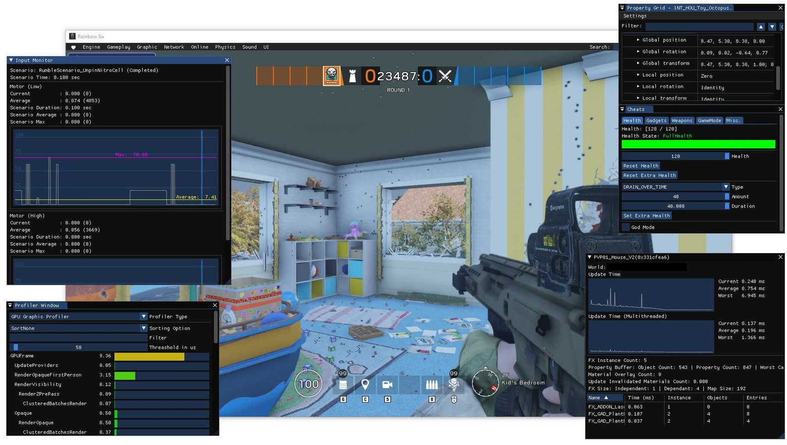
Immediate Mode это противоположная философия, когда виджеты не хранятся вообще в виде структуры, и каждый кадр код заново описывает весь интерфейс с нуля. Dear ImGui и Nuklear построены на этом, и тут есть своя обманчивость простоты.
// Immediate mode: интерфейс это код
if (gui.Button("Сохранить")) {
save_game(); // нажатие обрабатывается тут же, по месту
}
gui.SliderFloat("Громкость", &volume, 0.0f, 1.0f);
gui.Text("FPS: %d", current_fps);
// никакого дерева, никаких подписок, никакого состояния между кадрамиПростота подкупает дешевой отладкой, потому что отлаживать надо код, а весь интерфейс можно читать сверху вниз, и нет никакого скрытого состояния, которое могло бы протухнуть. Но платить за это приходится тем, что надо описывать и пересчитывать весь UI каждый кадр, даже если на экране не поменялось ровным счётом ничего. Поэтому immediate mode царит в отладочных тулзах и редакторах, где это неважно, и куда реже доезжает до финального игрового HUD.
ECS mode это попытка натянуть новую сову на старый глобус, т.е. интерфейс на ту же модель, что и весь остальной игровой мир. Идея тоже в сущности простая, потому что каждый виджет это сущность, у которой есть компоненты Position, Size, Color, Text, Visible, а иерархия выражается компонентом Parent { entity_id }. Bevy UI это, наверное, самая последовательная попытка довести идею до конца, и звучит она прекрасно, потому в таком случае один и тот же ECS-движок крутит и геймплей, и интерфейс.
Чтобы понять, почему ECS на UI звучит прекрасно, но ведёт себя отвратительно, надо вспомнить, для чего он вообще появился, а появился он ради игрового мира с тысячами объектов, а не ради десятка кнопок. Пионером подхода считается движок Thief: The Dark Project, который первым применил ECS, и тот же движок потом переиспользовали в сиквеле и в System Shock 2.
Каноническим же стартом всей идеи стал доклад Скотта Биласа на GDC 2002 про систему игровых объектов в Dungeon Siege, который вдохновил множество более поздних известных реализаций. И масштаб там был больше 73 тысяч уникальных типов объектов и около 100 тысяч объектов, расставленных по картам, а некоторые уровни содержали до 60 тысяч сущностей. Вот ради такого ECS и придумали, ради толпы однотипных объектов, по которым надо гонять системы линейно и быстро.
Соблазн когда у тебя уже есть быстрый ECS, крутящий весь игровой мир, натянуть его на отдельный UI-движок и выразить интерфейс теми же сущностями и компонентами. Один планировщик систем, один аллокатор, одна модель данных на всё, и виджет ничем принципиально не отличается от куста или пули.
И тут вылезает та же проблема, что и у flat list. UI по своей природе иерархичен: лейаут вложенный, z-order наследуется, события всплывают от ребёнка к родителю. А ECS по своей природе любит плоские однородные толпы независимых сущностей. Когда выражаешь дерево через компонент Parent { entity_id }, то ровно тем же движением затаскиваешь обратно и прыжки по ссылкам, и необходимость соблюдать порядок обработки родитель-раньше-детей, то есть всю ту топологическую возню из прошлого раздела, только теперь поверх ECS-машинерии. Плюс сам ECS не бесплатен на таком профиле и каждый чуть-чуть разный виджет это чуть-чуть другой набор компонентов, и хранилище начинает фрагментироваться на множество мелких групп, что съедает обещанную линейность.
Именно поэтому сообщество того же Bevy жалуется, что создавать глубокие иерархии интерактивных UI-узлов сложно, и привычные задачи требуют кучи бойлерплейта в виде маркерных компонентов, систем и бандлов, отчего код тяжелее держать в голове. Теперь поверх ECS-UI начали прикручивать immediate-mode обёртки, потому что в иммедиат-режиме ECS-UI можно гонять, обновляя виджеты каждый кадр, но идиоматичным и производительным это уже не будет. То есть чистый ECS оказался неудобен ровно для той части UI, которая хороша у immediate mode, и пришлось мирить два подхода.
На практике же чистого ECS-UI в продакшене не бывает, и вряд ли будет, потому что UI по своей природе глубоко иерархичен и завязан на порядок (что рисуется поверх чего, кто кого обрезает по границам, чьё нажатие перехватывает событие у нижнего слоя), а ECS в чистом виде идеологически про плоские наборы компонентов без выраженной иерархии и порядка. Поэтому в реальных движках UI обычно живёт как отдельная подсистема с однонаправленным потоком данных, которая может стоять рядом с ECS и читать из него данные, но не пытается быть чистым ECS, потому что иначе вы быстро упираетесь в борьбу с фреймворком вместо работания работы.
Ось четвёртая: поток данных

Хранение это про то, где виджеты лежат, а поток данных это про то, как до них доезжают изменения.
MVC / MVP это та самая классика из учебников, где модель хранит данные, view их показывает, а controller или presenter сидит посередине и разруливает. В вебе и в бизнес-приложениях это всё ещё несущая конструкция, а вот в играх в чистом виде встречается редко, потому что игровое состояние меняется часто, данные приходят из множества источников, и аккуратная трёхслойная церемония наложения рук MVC на контролы под таким напором быстро превращается в кашу из контроллеров.
MVC в чистом виде в играх редкий гость. Пришёл он из мира настольных приложений конца семидесятых и придумал его Трюгве Реенскауг в Xerox PARC примерно в 1979 году под Smalltalk-80. Задача была разделить данные, форму, которая их показывает, и ввод пользователя. Дальше из этого выросли вариации и окончательно MVP оформился в девяностых в недрах Taligent и IBM как «контроллер с большими полномочиями», а MVVM придумал Джон Госсман из Microsoft в 2005-м специально под data binding в WPF.
Родословную этот патерн ведет из бизнес-софта, где давно стал опорной конструкцией именно в веб- и app-разработке для поддерживаемых UI-систем, а под игровую нагрузку его никто не проектировал.
MVC и его родня построены на допущении, что состояние меняется событийно и редко, например пользователь что-то ввёл в поле, контроллер поймал, модель обновилась, view перерисовался. А игровое состояние меняется не по событию, а непрерывно, каждый кадр, и приходит из кучи источников сразу: физика, сеть, ИИ, ввод, анимация.
В такой среде эта модель либо начинает дёргать систему оповещений по сто раз за кадр, либо разработчик плюёт на чистоту и тащит данные в обход слоёв, и вот тут как раз и расцветает та самая каша из контроллеров, потому что слой, который должен был разруливать, превращается в свалку прямых колбеков «достань вот это здоровье вот из того менеджера прямо сейчас».
Ключевая деталь, без которой MVVM в игре вообще не имеет смысла, это связующий слой. Но все, кто рассказывает про MVVM в играх, сознательно пропускают четвёртую часть, которая и делает всю магию. Потому что тогда не смогут продать вас свой супер-пупер-мега-новый-фреймворк.
Binder, уже должен быть написан кем-то в составе движка или UI-фреймворка. Он будет по событию узнавать об изменении во ViewModel и обновлять нужный элемент View, и без этого биндера MVVM очень трудно оправдать. Такой Binder придется писать в каждом первом движке, но фреймворк вам уже продали, то есть паттерн жизнеспособен в играх ровно настолько, насколько движок дает готовые механизмы связывания, и сам ты их писать не должен.
У MVVM в геймдеве есть вполне конкретные носители, просто это снова middleware и движки. Главный из них это NoesisGUI, фактически перенос мира WPF в игры. Там View это XAML, который дизайнеры рисуют в инструментах вроде Blend, View получает данные из DataContext через data binding, и авторы прямо рекомендуют чистый MVVM-подход, при котором программисты выставляют информацию через DataContext, а это и есть Model в терминах MVVM.
Работает оно поверх Unity, Unreal, MonoGame и кастомных движков, а сами клиенты хвалят его именно за то, что паттерн MVVM, который использует Noesis, крайне гибок и позволяет строить большие сложные интерфейсы, которые легко поддерживать, для сложных мультиплатформенных тайтлов, от иммерсивных VR-интерфейсов до глубоких инструментов создания контента. Вот это «сложные мультиплатформенные тайтлы и тулзы» и есть естественная среда MVVM в играх.
Второй носитель это сам Unreal, который дозрел до встроенного MVVM и механизм UMG ViewModel-плагина, появившегося в Unreal Engine 5.1, с системой field notify, когда при изменении переменной через обычный Set рассылается уведомление, и привязки автоматически обновляются.
Любопытно, что встроенным он стал довольно поздно и сам Unreal долго не имел поддержки MVVM из коробки, а до этого паттерн в UE приносили несколькими community-плагинами.
Получается, что MVC/MVP/MVVM это «бизнес-приложенческий» слой, импортированный в игры, и ведёт он себя ровно как импортная деталь, т.е. великолепно встаёт в ту часть проекта, которая похожа на приложение, и сопротивляется там, где начинается все остальное. Не существует одной правильной модели UI, как не существует одного правильного типа памяти, есть только разные нагрузки, под каждую из которых выбирают своё, а живой проект держит несколько подходов сразу, MVVM в настройках и immediate-mode на HUD, ровно как консоль держит большую медленную DRAM рядом с быстрой маленькой SRAM.
Поэтому хитрые игроделы притащили модель Reactive / Observable, которая переворачивает ответственность и теперь UI подписывается на изменения данных и обновляется сам. Поменялся HealthComponent и выстрелил событием, и все подписчики (полоска здоровья, краснота экрана, звук сердцебиения) узнали об этом и обновились, не спрашивая каждый кадр «ну что, уже поменялось?». Это очень популярно в мобильных играх, потому что отлично экономит cpu на лишних пересчётах, но у реактивности есть тёмная сторона. Он очень любит разрастаться подписками и становится мучительно сложно понять, почему именно вон тот виджет вдруг перерисовался, а этот нет, превращая отладку в распутывание клубка «кто на кого подписан».
Идея этого всего лежить в паттерне Observer из той самой книги банды четырёх, что объект-субъект держит список подписчиков и дёргает их при изменении. Дальше идея дозревала и родилась вокруг анимации, то есть вокруг значений, меняющихся во времени, что для нашей темы символично.
В массовую разработку реактивность пришла, когда Microsoft обобщила Observer до потоков данных в виде Reactive Extensions для .NET, и сегодня ReactiveX это библиотеки, доступные на множестве языков, а сам подход сфокусирован на потоках данных и событиях и вдохновлён паттернами Observer, Iterator и функциональным программированием. То есть реактивность это Observer, скрещённый с итератором и функциональщиной.
В геймдев реактивность затащили в первую очередь через Unity, и главным носителем стал UniRx. UniRx (Reactive Extensions for Unity) это реимплементация .NET-овских Reactive Extensions, и сердцем его как раз является то, что нужно интерфейсу. ReactiveProperty это специальный тип UniRx, который отслеживает изменения данных и реагирует на них, расширяя Observable так, чтобы в реальном времени ловить изменение значения и уведомлять подписчиков.
Тут есть момент, который красиво смыкается с прошлым разделом про MVVM. Помните, я говорил, что MVVM в играх жив ровно настолько, насколько движок дал тебе готовый Binder? Так вот в Unity этого биндера нет, и реактивность затыкает эту дыру, и авторы UniRx прямо пишут, что Unity не предоставляет механизма привязки UI, а сделать слой биндинга слишком сложно и накладно по производительности, поэтому вместо настоящей привязки используют подписку через Observables, и этот паттерн называют Reactive Presenter.
То есть в Unity-мире реактивность это и есть способ получить эффект MVVM-привязки без самого биндера, что для мобилок с их батарейкой и слабым процессором особенно хорошо, потому что событийное обновление дешевле постоянного опроса.
Не случайно реактивность так плотно прописалась именно в мобильной Unity-разработке, от казуальщины до мобильных батлроялей. Сверху UniRx ещё и причёсывает остальной событийный хаос игры: ObservableTriggers превращают Unity-события в Observables, а позже из него в отдельную библиотеку UniTask вынесли интеграцию async/await, и реактивная линия продолжилась новыми поколениями библиотек.
А теперь та самая расплата. Реактивность инвертирует ответственность, и это здорово ровно до того момента, пока подписок мало. Когда их становятся сотни, отладка превращается в распутывание клубка «кто на кого подписан», потому что причинно-следственная связь больше не лежит в коде линейно сверху вниз, а размазана по графу подписок, и на вопрос «почему этот виджет перерисовался, а соседний нет» нет ответа в одном месте, его надо собирать по всей цепочке источников.
Поэтому умные игроделы притащили модель Unidirectional Data Flow , когда данные текут строго в одну сторону по кругу. Теперь UI описывается состоянием, из него рендерится видимый UI, видимый UI порождает события, события порождают новое состояние, круг замыкается, нигде нет обратных стрелочек.
┌──────────────┐
│ Состояние │
└──────┬───────┘
│ рендер
▼
┌──────────────┐
│ UI │
└──────┬───────┘
│ событие (клик, ввод)
▼
┌──────────────┐
│ Состояние │ новое состояние = f(старое, событие)
└──────┬───────┘
└────────► обратно в СостояниеИдея была вдохновлена React и Redux из веба, и в играх встречается во внутренних движках студий именно из-за предсказуемости потока данных. Теперь над интерфейсом может работать большая команда, включая программистов, дизайнеров, художников и аниматоров, и никто не должен держать в голове всю систему подписок целиком.
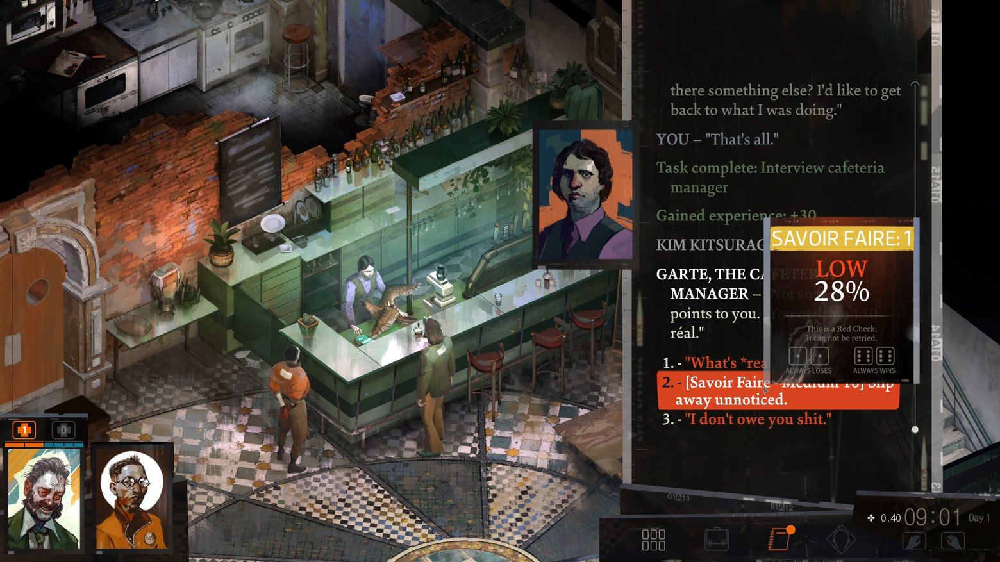
Архитектуру Flux представил Facebook в 2014 году, и родилась она из необходимости разобраться с запутанными двусторонними привязками и рассинхроном состояния в их быстро растущих одностраничных приложениях.
То есть Facebook уткнулся ровно в клубок «кто на кого подписан и почему этот виджет вдруг перерисовался», и ответом стало жёсткое правило, что данные текут строго в одну сторону. Поток в Flux однонаправленный, что делает его предсказуемым и простым в отладке, и важно, что Flux это не библиотека, а архитектурный паттерн, цикл «действие, диспетчер, стор, представление».
Год спустя идею довели до нормальной реализации, и ужали всё до предельно простой модели с одним-единственнымм стором на всё приложение, а любые изменения только через действия, которые порождают следующее состояние, при этом прежнее состояние остаётся нетронутым, а новое выводится из него. Вот это «новое состояние выводится из старого, а не мутирует его» и есть та самая картинка выше без обратных стрелочек.
UDF напрямую лечит проблему отладки из прошлого раздела. При едином источнике истины отладка становится проще и можно логировать изменения состояния, отслеживать действия и даже делать time-travel debugging, проигрывая действия и инспектируя состояние в любой момент времени. Если реактивность размазывала причинно-следственную связь по графу подписок, то UDF, наоборот, логирует последовательность отправленных действий и снимки состояния, и разработчик может проиграть этот лог действий, чтобы реконструировать и осмотреть любое прошлое состояние, прыгая по истории вперёд и назад.
На вопрос «почему перерисовался вот этот виджет» теперь есть ответ в одном месте: вот упорядоченный список действий, вот состояние до и после каждого изменения.
Как и всё в этой серии, UDF приехал в игры из веба и живёт в основном на уровне библиотек и философии, В Unity и других движках есть Redux-подобные библиотеки состояния, и применяют их обычно там же, где и MVVM с его реактивностью, т.е. в меню-тяжёлых и мобильных проектах, магазинах, инвентаре, мета-состоянии, то есть в той части игры, что по сути уже бизнес-приложение.
Бесплатного тут, разумеется, нет. Неизменяемое состояние означает, что на каждое изменение порождается новая версия, и это все превращается в поток выделений памяти, который на хотпасе недопустим. Плюс церемония свадьбы, когда на каждое крошечное изменение нужны действие и редьюсер, и для огромного непрерывно меняющегося игрового мира гонять каждую позицию каждого энтити через единый стор бессмысленно.
Инди-разработчикам ничего их вышеперечисленного не нравилось и они притащили модель Data Binding с двусторонней привязкой виджетов к данным. Теперь подвинул слайдер и поменялось значение, поменялось значение в коде и подвинулся слайдер. Для форм, настроек и редакторов это божественно удобно, ровно до того момента, когда у вас появляется поле A, которое влияет на поле B, которое влияет на поле A, и система начинает гонять обновления по кругу, потому что двусторонние привязки очень легко закольцовываются, и эту проблему вы получаете бесплатно вместе с удобством.
Двусторонняя привязка не молодой инди-выскочка, а как раз заслуженный корпоративный ветеран, от которого все остальные в ужасе сбежали. Родом она из мира XAML и WPF от Microsoft ещё в 2006-м умел mode=TwoWay, а массово знаменитой (и одновременно печально известной) двустороннюю привязку сделал AngularJS от Google в начале десятых.
Так что правильнее сказать, что инди и авторы тулзов не изобрели этот подход, а радостно подобрали то, что энтерпрайз с криками выбросил, ровно потому что для форм, настроек и редакторов удобство перевешивает все его минусы.
Главная прелесть в том, что это избавляет от необходимости вручную писать слушателей событий, держать DOM и состояние в синхроне. Для экрана настроек это и просто рай, когда подвинул слайдер, значение в коде поменялось, поменял значение в коде, слайдер уехал, и никакого кода-связки писать не надо. Под капотом у Angular это работало через watcher’ы, которые фреймворк заводит для каждой привязанной к $scope переменной, и digest-цикл, который обходит scope и его детей, обновляя изменения.
В играх двусторонняя привязка живёт в формах, настройках и редакторах, и почти никогда на боевом HUD. Самый частый пример это редакторы самих движков, вроде инспектора Unity, панелей Details в Unreal, инспекторов Godot, все эти панели свойств двусторонне привязаны к полям объектов, ты меняешь число в инспекторе, оно меняется в объекте, скрипт меняет поле и инспектор обновляется.
То же самое в экранах опций и во встроенных в игры редакторах уровней и модах. Из middleware двустороннюю привязку приносит NoesisGUI со своим XAML, где View получает данные из DataContext через data binding, и режим TwoWay там доступен ровно как и в родном WPF.
«инди-версия» двусторонней привязки, это даже не фреймворк, а старый добрый хак с передачей по указателю. Когда ты пишешь что-то вроде SliderFloat("speed", &value), виджет каждый кадр и читает, и пишет эту переменную прямо на месте, и это, по сути, и есть двусторонняя привязка, только без watcher’ов, без digest-цикла и без скрытого графа подписок.
Любопытно, что именно из-за отсутствия этого скрытого графа инди-вариант гораздо реже влетает в закольцовку, потому что всё происходит в детерминированном порядке внутри одного кадра, и распутать, кто кого перезаписал, можно просто глазами по коду, а не раскапыванием watcher’ов.
Двусторонняя привязка это апофеоз удобства, который стирает весь бойлерплейт синхронизации модели и view, беря за это очень небольшую плату. Это ещё один ответ на ту же вечную проблему, что тянется через все истории: каждый подход к UI это свой размен между удобством, трассируемостью и производительностью, ровно как каждый тип памяти в консоли это размен между скоростью, ценой и объёмом, и выбирается он не «вообще», а под конкретный профиль данных.
Signal Graph никто не звал, он сам пришел. Это, по сути, более тонкая версия реактивности, когда интерфейс описан как направленный граф сигналов, где каждый узел это вычисление, зависящее от своих входов, и когда меняется один источник, граф автоматически пересчитывает только те узлы, которые реально зависят от изменившегося входа. Это модно в вебе, а в играх это опять-таки обитает во внутренних движках или самописных реализациях.
Ось пятая: расположение элементов
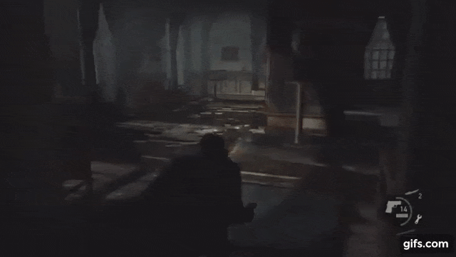
Допустим, мы решили, где виджеты лежат и как до них доходят данные. Теперь надо понять, в каких пикселях их рисовать, и это отдельная большая тема не только для игр, под названием layout.
Constraint-based подход позволяет описывать не позиции, а ограничения вроде «эта кнопка прижата к правому краю», «эти два поля одной ширины», «отступ между ними не меньше восьми пикселей», после чего "решатель" находит конкретные координаты, удовлетворяющие всем ограничениям сразу. Так работает Auto Layout в iOS, и это очень мощно и выразительно, но за гибкость приходится платить тем, что время решения системы ограничений плохо предсказуемо, а непредсказуемое время это последнее, что вы хотите видеть в кадровом бюджете игры.
Constraint-based layout изобретение очень давнее, еще самой зари компьютерной графики и прародитель это Sketchpad Айвена Сазерленда 1963 года, первая интерактивная графическая программа, где можно было задавать геометрические ограничения и система их разрешала.
Дальше идею десятилетиями развивали и кристаллизовалась она в алгоритме Cassowary. Cassowary это инкрементальный тулкит решения ограничений, который эффективно решает системы линейных равенств и неравенств, причём ограничения могут быть как требованиями, так и предпочтениями, а солвер обновляет переменные так, чтобы удовлетворить заданным ограничениям.
Разработали его Грег Бадрос, Алан Борнинг и Питер Стаки, специально оптимизировав под задачи интерфейсов. Дальше Cassowary подмял под себя почти весь мир app-UI и в итоге стал движком раскладки в Mac OS Lion, а оттуда уехал в iOS, тот самый Auto Layout который вы все видели на яблоках.
Auto Layout не зря заработал репутацию тормозного на больших количествах ограничений, а непредсказуемое время это прямой путь к фризам и stall’ам. Показательно, что даже сама Apple, построив Auto Layout в более новом SwiftUI заменила его на более простую и предсказуемую модель, где родитель предлагает размер, а ребёнок выбирает свой, ровно ради предсказуемости и скорости.
Игры почти всегда обходят общий солвер стороной по причине именно непредсказуемости, предпочитая раскладки с ограниченной, фиксированной стоимостью: анкоры и пивоты в Unity uGUI и в Unreal UMG, или флексбоксы. Где constraint-based реально живёт в геймдеве, так это в редакторах и инструментах, где кадрового бюджета по сути нет и можно позволить себе солвер, или в мобильных играх, чьи экраны меню иногда просто пользуются нативной раскладкой Auto Layout или ConstraintLayout.
Flexbox / Flow проще и предсказуемее, теперь элементы выстраиваются вдоль некоторой оси с правилами выравнивания и переноса, как ячейки таблицы. Библиотека Yoga от Meta реализует именно flexbox, живёт в React Native и оттуда заехала в некоторые игровые UI, позволяя сделать хороший баланс между выразительностью и предсказуемостью с понятной стоимостью в миллисекундах.
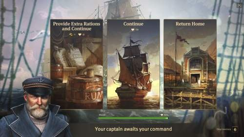
Anchors + Offsets все еще остается рабочей лошадкой игрового UI, когда позиция элемента задаётся как привязка к краю, центру или углу родителя плюс отступ в пикселях. Unity UGUI и Unreal UMG построены вокруг этого, и причина популярности именно в предсказуемости, потому что якоря считаются тривиально, поведение при смене разрешения экрана не меняется и художник прекрасно понимает, что произойдёт с элементом на разных разрешениях, не запуская сложные проверки в голове.
Чтобы оценить, почему якоря стали рабочей лошадкой, надо вспомнить, что когда-то их не существовало за ненадобностью. В эпоху консолей разрешение было ровно одно: Atari, NES, аркадный автомат рисовали в один-единственный экран, и координаты элементов просто прибивались гвоздями в пикселях, потому что других пикселей не предвиделось.
Проблема позиционирования родилась вместе с разнообразием экранов, когда появился сначала зоопарк разрешений на PC, а потом мобильный бум с его бесконечными соотношениями сторон сделал независимость от разрешения обязательной. Вот тогда и понадобился способ описать позицию так, чтобы она пережила смену экрана, и этим способом стали якоря с отступами.
Позиция теперь это не абсолютные координаты, а привязка к краю, углу или центру родителя плюс отступ в пикселях. Это относительная координата, которая считается тривиально и переживает смену разрешения без всякого солвера, и по сути это constraint-based из прошлого раздела, обрезанный минимального подмножества ограничений, которое решается за O(1) на элемент, а вместо «найди координаты, удовлетворяющие системе» тут «возьми вот этот край родителя и отступи на восемь пикселей», и всё, никакого графа уравнений.
Если предыдущие модели жили во внутренних движках и тулзах, то якоря с отступами это дефолтная раскладка UI во всех движках, на которых сделана гигантская доля всех игр вообще. Так что от инди до больших тайтлов любой движок предлагает это по умолчанию, и чтобы НЕ использовать якоря, надо еще специально постараться.
Расплата у этой простоты тоже есть, и якоря менее выразительны, чем солверы или другие системы, и как только раскладка становится по-настоящему сложной и адаптивной, начинается возня с вложенными layout-группами и тонкой настройкой. Поэтому движки добавили сверху флексбокс-подход, а на смену продвигают веб-паттерны со стилями. То есть якоря не пытаются быть всем, они закрывают кейсы простых форм, а сложные случаи отдают флексбоксу.
Anchors + offsets победили в войне раскладок благодаря этой простоте, давая выразительность уровня солверов в обмен на ограниченную сверху стоимость, стабильное поведение и читаемую художником модель, и для боевого UI этот размен почти всегда выглядит как победа якорей, когда рабочей лошадкой становится не самый умный инструмент, а тот, чью стоимость и поведение можно предсказать.
Manual / Absolute тоже остается рабочей лошадкой, но уже переехал в соседнюю конюшню. Это когда вы просто ставите всё руками в пикселях или нормализованных координатах, без всякого лейаут-движка. Так живёт Dear ImGui и подавляющее большинство кастомных HUD-систем, и это нормальный выбор, потому что для боевого HUD из пяти элементов городить constraint-солвер как стрелять из пушки по воробьям.
Retained Immediate Mode (RIMD) - гибрид, который пытается взять лучшее от обоих миров, чтобы код писался в приятном immediate-стиле, а под капотом система сравнивала то, что вы описали, с прошлым кадром и трогала только изменившееся. Концептуально это то, что делает React со своим virtual DOM и что делает Flutter, и в эту сторону, на мой взгляд, сейчас дрейфует современный игровой UI, потому что разработчик получает простоту immediate-кода, а движок получает экономию retained-перерисовки, и обе стороны более-менее довольны.
Ось шестая: рендер

Дальше программно нарисованный UI надо превратить в пиксели, и за время развития игр появилось несколько школ, каждая из которых имеет поклонников и злопыхателей.
Canvas-based рендеринг сваливает все виджеты в одно пространство, где порядок добавления определяет, что перекрывает что, а близкие по состоянию элементы батчатся в один проход. Просто, понятно, отлично батчится, и для большинства 2D-интерфейсов этого хватает за глаза.
Вопрос зачем это нужно, родом из статьи про память на консолях. Дорог не сам пиксель, дорог вызов отрисовки и каждый draw call это переключение состояния GPU и накладные расходы на стороне CPU. Наивный UI, рисующий каждую иконку и каждую буковку отдельным вызовом, кладёт мобильный процессор задолго до того, как упрётся в закраску. Canvas-подход это объединение спрайтов, применённый к интерфейсу, т.е. надо собрать однородную геометрию в один меш и отдать его разом. Поэтому он «отлично батчится» не случайно, он для этого и придуман.
Канвас отвечает за объединение своей геометрии в батчи, генерацию команд отрисовки и отправку их в графическую систему, всё это в нативном C++ коде, и называется rebatch или batch build. Расчёт батчей не бесплатный, потому что меши обычно берутся из компонентов вроде Canvas Renderer, и чтобы посчитать батчи, надо отсортировать меши по глубине и проверить их на перекрытия, общие материалы и так далее. То есть «порядок добавления определяет, что перекрывает что» и движок буквально сортирует по глубине и ищет наложения, чтобы понять, что можно склеить, а что нет.
И тут вылезает та же самая цена, об которую мы спотыкались в разделе про scene graph, потому что батч кешируется и живёт, пока ничего не поменялось, но из-за того, что движок рисует UI несколькмими или одним проходом, то элемент канваса, меняющий позицию, масштаб или поворот, заставляет канвас перестроиться, и смена содержимого, например текста, тоже вызывает эту перестройку.
А перестраивается не один элемент, а всё, потому что канвас проходит по всей иерархии, чтобы заново сгенерировать список элементов, пересчитывая вершины, индексы, цвета и uv всех элементов. Отсюда классический провал производительности при даже невинных ховер-эффектах на кнопках, которые вызывают Canvas Rebuild. То есть достоинство канваса (склеил всё в один проход) и его проклятие (изменил один пиксель, пересобрал весь проход) это две стороны одной медали.
Лечится это приёмом разделения на сабканвасы. Это вложенные канваса, которые изолируют своих детей от родителя, "грязный" ребёнок не заставляет родителя перестраиваться и наоборот. Поэтому каноничный совет «выноси динамику на отдельный канвас от статики» это прямое следствие того, как работает батчинг: статичный фон пусть лежит в одном вечном батче, а покадрово тикающий таймер дёргает только свой маленький сабканвас. Сюда же ложится дисциплина с атласами, потому что элементы из разных текстур не склеятся в один проход отрисовки при всём желании движка.
Canvas-based отрисовка это то, как рисует UI огромная доля игр на Unity и концептуально то же самое лежит под слейтовым рендером Unreal и под Control-нодами Godot. В 2D и мобильном геймдеве это вообще дефолт, потому что для большинства плоских интерфейсов, этого хватает за глаза и ограниченное число элементов и редкие изменения и всё прекрасно склеивается.
Layer-based подход разбивает интерфейс на слои (мир, HUD, меню, тултипы), и каждый слой рендерится отдельно со своими параметрами глубины и блендинга. Это нужно чтобы у разных частей UI работали разные правила композиции, например тултип был всегда поверх всего, а эффект урона смешивался с миром, а меню, должно затемнять мир под собой, и тащить всё это на одном плоском canvas быстро становится сложно и дорого.
Layer-based рендер родился в кинопроизводстве задолго до игрового UI. Финальный кадр в кино и спецэффектах традиционно собирали не за один проход, а из нескольких и сцена может рендериться несколькими слоями или пассами, которые потом склеивают в готовый кадр. Эта традиция идёт ещё от motion control съёмки доцифровой эпохи, когда камеру прогоняли мимо модели корабля сначала ради освещённого «бьюти-пасса», а потом тем же движением снимали отдельно светящиеся окна и дюзы.
Игровой UI просто унаследовал этот принцип, когда разные части картинки живут на разных слоях со своими правилами, а потом соединяются вместе. Разница лишь в том, что в кино это офлайн, а в игре склейка происходит каждый кадр в реальном времени.
Корень потребности именно в том, что у разных частей UI разные правила композиции, и натянуть их на один плоский canvas означает воевать с ним. Эффект урона должен смешиваться с миром по своему блендингу, тултип обязан быть поверх всего и никогда не нырять под другие элементы, меню должно затемнять мир под собой полупрозрачной подложкой.
Это три разных режима наложения и три разных правила глубины, и пытаться выразить их порядком в одной плоской куче быстро превращается в борьбу с z-order’ом. Слои разрубают этот узел, давая каждому классу UI собственное пространство со своими параметрами.
Самый показательный случай применения это VR, где layer-based это не вопрос удобства композиции, а прямое требование железа ради читаемости и комфорта игрока. На шлемах есть так называемые композиторные слои, куда можно UI-виджет отдать отдельным слоем, отключив ему рендер в основном пассе, и тогда он рисуется композитором шлема напрямую.
Делается это потому, что текст, проведённый через обычный рендер с его репроекцией и сжатием, в VR замыливается и дрожит быстро приводя к ряби в глазах и головной боли, а отдельный композиторный слой остаётся резким. На Meta Quest можно повесить до 16 композиторных слоёв, всё сверх этого просто не нарисуется.
SVG-рендеринг хранит все элементы, иконки и эффекты не как готовые растровые картинки фиксированного размера, а как векторное представление, что позволяет масштабировать ВСЁ без артефактов и рисовать красивые обводки, тени и свечение почти бесплатно прямо в шейдере. Сегодня это используется в нескольких фреймворках, потому что художники до сих пор предпочитают текстуры из-за их предсказуемости и надежности.
Настоящий векторный UI в играх своего пика достиг во флешовую эпоху, и носителем был Scaleform, внутри у него был GPU-ускоренный рендер с движком тесселяции векторов в треугольники и антиалиасингом, плюс векторная шрифтовая система и поддержка всех флешовых фильтров вроде Glow, Bevel и DropShadow. Вот оно, всё из вашего абзаца: вектор, масштабируемость, обводки и свечение почти даром. И половина AAA студий рисовало меню так в нулевых и начале десятых.
Но вектор в итоге проиграл, художники предпочитают текстуры за их предсказуемость. У честного вектора стоимость рендера зависит от сложности формы, сложный глиф или хитрая иконка это много кривых, много тесселяции, непредсказуемая нагрузка на кадр, тот самый враг кадрового бюджета. Плюс флешовая VM сверху со своими паузами, когда Scaleform свернули, вместе с ним из мейнстрима ушёл и чистый вектор как способ рисовать игровой UI.
А вот его упрощённый родственник, наоборот, захватил индустрию почти целиком, и вы наверняка им пользовались, не называя это вектором. Технику ввёл Крис Грин из Valve: signed distance field рендеринг применили в Team Fortress 2 и описали для конференции SIGGRAPH 2007 года «Improved Alpha-Tested Magnification for Vector Textures and Special Effects». Он позволяет рисовать растровые шрифты (но это частность для глифов) без зубчатых краёв даже при сильном увеличении. Обычный битмап-шрифт хорошо выглядит только при попадании пиксель в пиксель, а при повороте и масштабировании либо рассыпается на пиксели, либо мажется в блюр, и SDF чинит это, храня в текстуре не цвет, а расстояние до контура, по которому шейдер восстанавливает чёткую границу при любом размере.
Дальше технику довели до ума, потому что главная её болячка были скруглённые углы, и Виктор Хлумски в своей магистерской придумал multi-channel distance field, который восстанавливает острые углы почти идеально, используя все три цветовых канала, а его msdfgen стал референсной реализацией. Сегодня это стандарт и на SDF работает TextMeshPro в Unity, а в Unreal есть встроенный SDF-рендер текста для Slate с выбором типа поля (multi-channel, single-channel, приближённый) и качества прямо в профилях устройств. То есть резкий масштабируемый текст почти в любой современной игре это и есть запечённый вектор, просто под именем distance field, а не SVG
SVG-рендеринг это мечта о масштабируемости и дешёвых эффектах из шейдера, которая в играх реализовалась а через компромисс. Чистый вектор предлагал выразительность ценой непредсказуемой стоимости рендера, но победил distance field и текстуры, которые отдали часть гибкости в обмен на фиксированную, бюджетируемую стоимость. И это снова тот же урок, с которого начиналась статья про память, предсказуемость стоимости важнее пиковой красоты, потому что в кадровый бюджет, как и в память консоли, влезает не то, что эффектнее, а то, что можно посчитать заранее.
GPU-driven UI двигает формирование картинки в сторону видеокарты, оставляя процессору только обновление инпутов и отдельных состояний. Это имеет смысл, когда элементов реально очень много (например редактор уровней или стратегию с тысячами иконок), и узким местом становится не отрисовка пикселей, а сами накладные расходы на выдачу команд отрисовки, которые мы и пытаемся убрать с CPU.
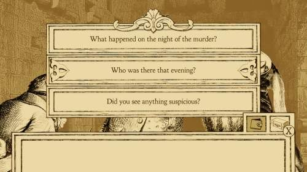
UI как шейдер / fullscreen pass это самый радикальный конец спектра, теперь весь UI рисуется одним или несколькими шейдерами, которые читают данные из текстуры и сами решают, где и что нарисовать. Сюда же можно отнести части diegetic-интерфейсов, экранных эффектов повреждения, а ещё это любимый приём демосцены, где традиционный UI-движок весит больше, чем вся демка целиком, и поэтому интерфейс рисуют почти весь математикой, а не виджетами.
Редкое, странное и экспериментальное
Дальше начинается территория, куда массовый геймдев заходит редко, но именно тут водятся самые интересные идеи, большая часть этого приходит из научных работ либо инди-поделок.
Procedural UI генерируется из метаданных или схемы. Самый явный пример это уже не игры, а тулзы движков, вроде редактора свойств в Unreal или инспектора в Unity, которые сами строят интерфейс из описания полей объекта, потому что вручную верстать редактор под каждый компонент это сизифов труд, который к тому же мгновенно устаревает при добавлении нового поля. В самих играх это иногда выныривает в рогаликах и процедурно-генерируемом контенте.
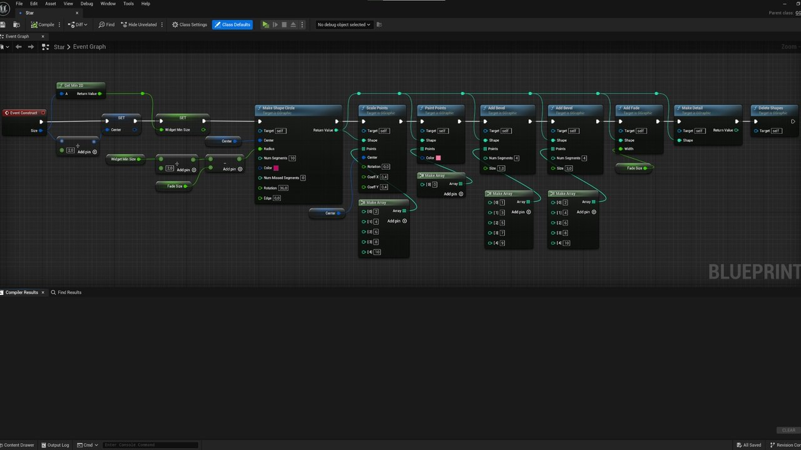
Relationship UI отказывается от иерархии в пользу графа зависимостей, когда элемент A «привязан» к B, «исключает» C, «группируется» с D. Дерево такое выразить не умеет, а граф умеет, и поэтому такой подход интересен для сложных диалоговых систем и квестовых интерфейсов, где связи между элементами принципиально не древовидны (одна реплика открывает три ветки и закрывает две другие, и нарисовать это деревом нельзя). Пример можно найти в недавно вышедшей игре inZoi, которая группирует элементы интерфейса по "связанности" с соседними.
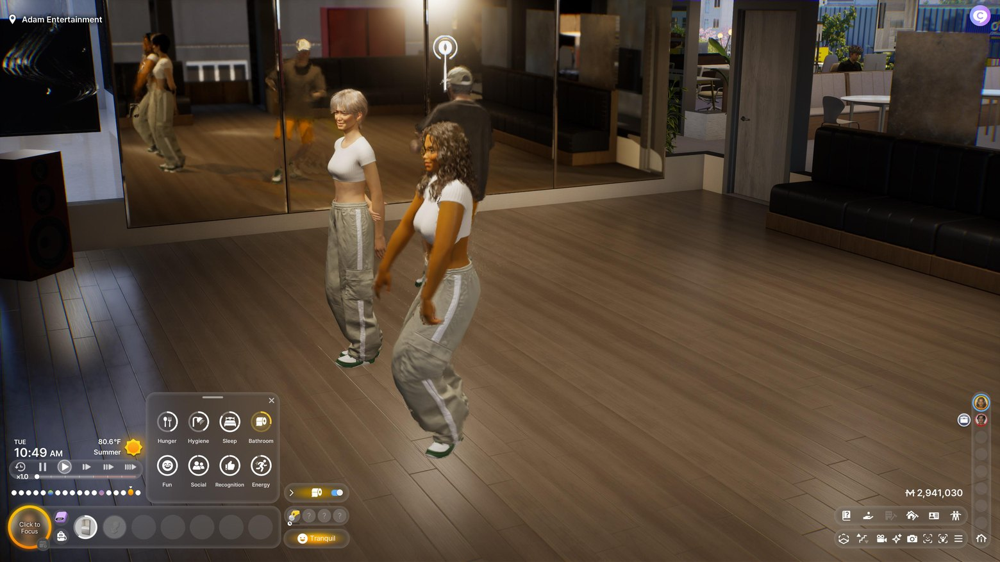
Simulation UI доводит идею diegetic-интерфейса до предела, так что теперь интерфейс не передает состояние, а сам является симуляцией, его элементы имеют физические свойства и могут быть например повреждены. Канонический Dead Space тут снова подходит, потому что его HUD это часть скафандра в трёхмерном мире, которая физически реагирует на происходящее или треснувший визор шлема и заляпанное стекло. Здесь классификация «по расположению в мире» и «по архитектуре» наконец-то встречаются в одном объекте.
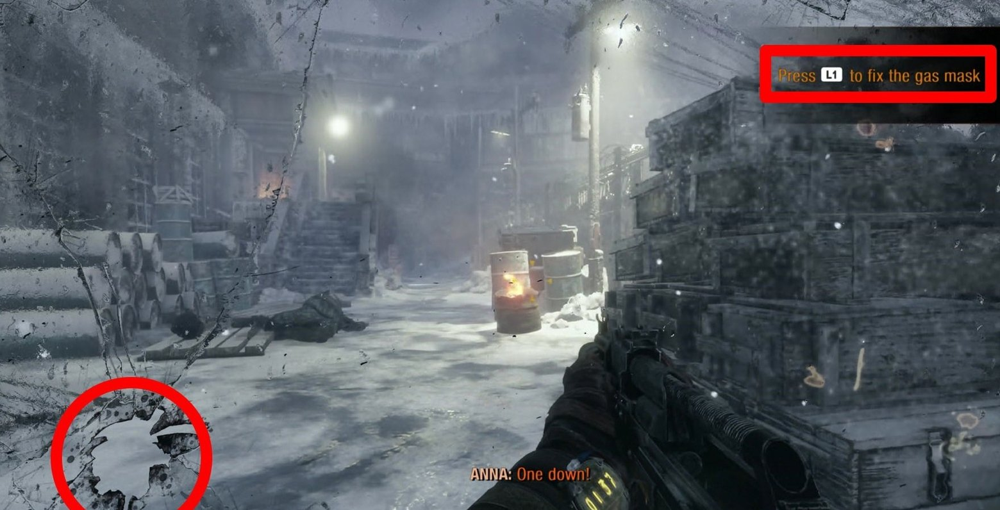
Declarative UI описывает интерфейс декларативно и часть работы делается заранее, на этапе компиляции или загрузки, например позиции статичных элементов запекаются в константы, чтобы в рантайме их не считать вовсе. Так делают в консольных играх, где есть смысл заплатить временем сборки за то, чтобы в кадре не тратить ни такта на вычисление того, что и так известно заранее.
Tangible UI реализует физику осязаемых предметов, вроде карточек, стопок, полок и т.д, которые можно «бросить», и они будут работать по законам физики. Slay the Spire отчасти про это, и фокус тут в том, что физичность в таком UI уже не украшение, а способ сделать интерфейс интуитивным, потому что наш мозг про физику бумажек знает с рождения, а вот про абстрактные виджеты поверх 3д мира нет.
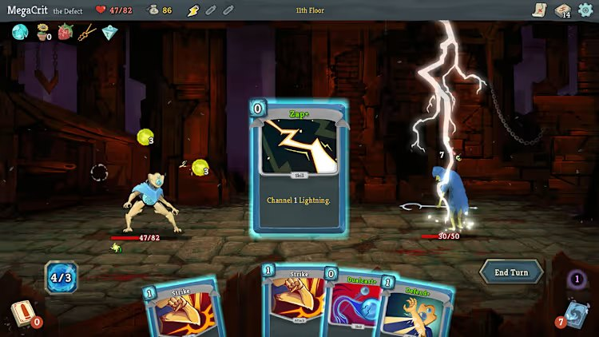
И наконец Self-modifying UI, который стирает границу между данными и кодом и позволяет менять код UI в рантайме в зависимости от поведения игрока. В нормальной игре это звучит как кошмар сопровождения, но в ARG-играх, где например «взлом» интерфейса сам по себе является геймплеем, это будет естественной фичей, и интерфейс, который игрок может переписать, перестаёт быть просто состоянием и становится частью мира.
Исследования и территория «а что если»
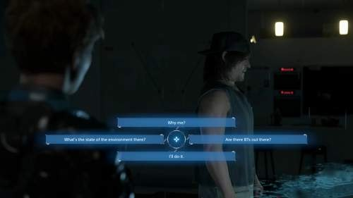
И наконец совсем дальний край карты, где обитают разные research-папиры и умершие стартапы, и очень редко шипнутые игры, но от этого не менее любопытное.
Datalog UI описывает состояние интерфейса как набор фактов в базе данных, а видимость и свойства элементов как запросы к этой базе. Поменялся факт player_health(42) и все запросы, которые от него зависят, автоматически пересчитались, потому что движок знает зависимости запросов от фактов. Идея вдохновлена Datalog и Datomic и не была реализована в известных мне играх, но как концепция «UI это запрос к базе фактов» она до сих пор будоражит умы.
Probabilistic UI пытается угадать ваши намерения и на основе предсказаний заранее перестраивает интерфейс, выдвигает нужные кнопки и увеличивает кликабельные зоны там, куда вы вероятнее всего потянетесь. Исследовалось это в контексте предиктивных интерфейсов для умных очков, но так и не попало в прод. Частично может отнести интерфейс в Crusader Kings, который подстраивается под ваш поиск и выталкивает наверх недавно просмотренных персонажей или объектов, начинает показывать показки или события, которые вы отмечали важными или недавно смотрели или искали.
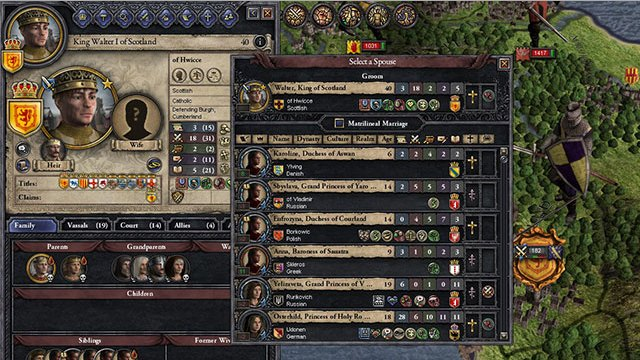
Semantic UI описывает элементы через поведение, а не через внешний вид, позволяя определить поведение «это кнопка подтверждения опасного действия», а система сама выбирает, как её нарисовать (красной, с иконкой, с подтверждением). Это очень близко к тому, что сейчас пытаются делать LLM-driven UI системы, и тут мы внезапно оказываемся на переднем крае, потому что языковые модели как раз неплохо умеют отображать смысл в представление.
Cellular Automata UI подчиняет элементы интерфейса локальным правилам взаимодействия с игроком и соседями, из которых вырастает глобальная структура, и это уже чистый художественный приём из демосцены и арт-игр, где интерфейс важен не как удобство, а как самостоятельное зрелище.
Что со всем этим делать
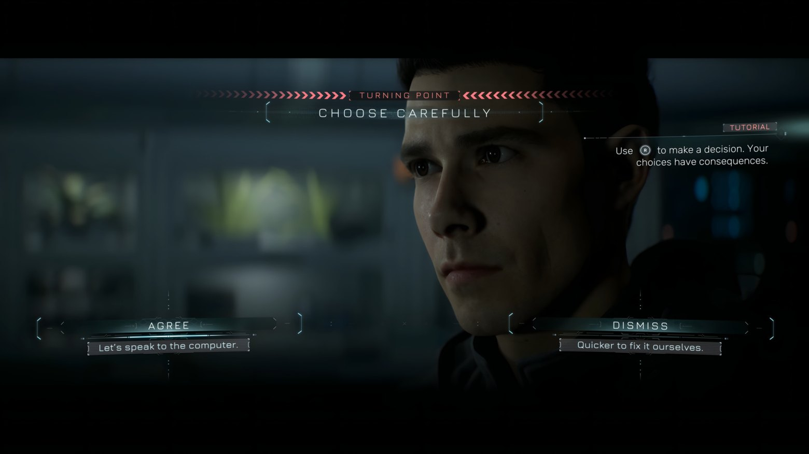
Если попытаться сложить все эти оси в одну картину, то выясняется неприятное: единственно правильной архитектуры UI не существует, и любой, кто говорит обратное, просто не выходил за пределы пары осей своего любимого движка. Diegetic или non-diegetic решает дизайнер исходя из погружения. Scene graph или flat list решает программист исходя из профайлера. Reactive или unidirectional решает тимлид исходя из размера команды. Constraint-based или anchors решает платформа исходя из кадрового бюджета и прочее и прочее. И все эти решения, вообще говоря, независимы, и это и есть ответ на вопрос заданный в самом начале первой статьи.
Любопытно, что историческая дуга у UI ровно та же, что и у памяти консолей. Сначала всё считалось вручную (manual layout, фиксированные координаты, immediate mode), потому что железо было слабым и абстракции были непозволительной роскошью. Потом пришли богатые retained-фреймворки с деревьями и автолейаутом, потому что железо разжирело и за удобство стало можно платить. А теперь маятник идёт обратно к гибридам вроде RIMD и GPU-driven UI, которые снова считают ровно столько, сколько надо, и ни тактом больше, только теперь уже не от бедности, а от зрелости.
Но фундаментальная задача за все эти десятилетия не поменялась ни на йоту, и она та же самая, что и у любой другой подсистемы в игре. Нужные данные должны оказаться на экране в правильном месте, в правильный момент и в правильной форме, иначе игрок увидит мерцающую полоску здоровья и решит, что у вас кривые руки, и будет, отчасти прав.
← Все статьи